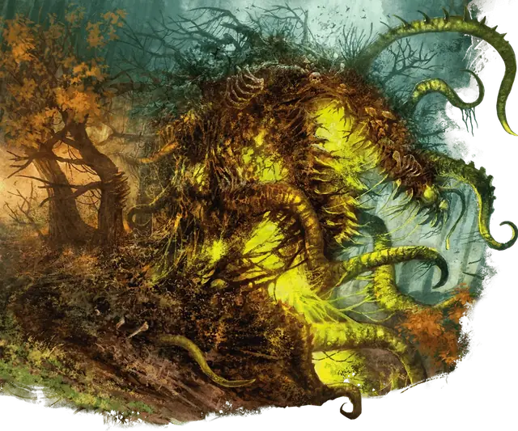

Спора Моандера
Spore of Moander
Огромное Растение, Хаотичное Злое

Класс Защиты 19 Инициатива −1 (9)
Хиты 230 (20к12 + 100)
Скорость 30 футов, Лазания 30 футов
| мод | спас | ||
|---|---|---|---|
| СИЛ | 22 | +6 | +10 |
| ЛОВ | 9 | −1 | −1 |
| ТЕЛ | 20 | +5 | +9 |
| мод | спас | ||
|---|---|---|---|
| ИНТ | 4 | −3 | −3 |
| МДР | 10 | +0 | +0 |
| ХАР | 6 | −2 | −2 |
Сопротивление урону Кислота, Холод, Электричество
Иммунитеты Огонь, Яд; Истощение, Оглохший, Опрокинутый, Ослеплённый, Отравленный, Парализованный
Чувства пассивное Восприятие 10, Слепое зрение 120 футов
Языки знает язык Бездны, но не говорит
Опасность 12 (8 400 опыта; БВ +4)
Особенности
Взрывная сердцевина. Когда спора подвергается урону Огнём, каждое существо в 5-футовой Эманации, исходящей от споры, получает 7 (2к6) урона Огнём.
Катящаяся масса. Труднопроходимая местность не стоит споре дополнительных футов перемещения.
Действия
Мультиатака. Спора (А) совершает четыре атаки Отростком или (Б) совершат две атаки Отростком и использует Поглощение.
Отросток. Бросок рукопашной атаки: +10, досягаемость 20 фт. Попадание: 11 (1к10 + 6) Колющего урона плюс 10 (3к6) урона Кислотой. Если цель Большого размера или меньше, спора притягивает её к себе на расстояние 5 футов по прямой.
Поглощение. Спасбросок Силы: Сл 18, одно существо Большого размера или меньше в 5 футах. Провал: Цель притягивается в пространство споры и становится Схваченной (Сл освобождения от захвата 16). Пока длится захват, цель Ослеплена, Опутана и получает 17 (5к6) урона Кислотой в начале каждого хода споры. Когда спора перемещается, Схваченная цель перемещается вместе с ней, не затрачивая дополнительного перемещения. Этим действием ползающая насыпь может держать Схваченным за раз только одно существо Большого размера или вплоть до девяти существ Среднего размера или меньше.
Бонус мастерства +4
Среда обитания Болота, Леса
Сокровища Отсутствуют
Спора Моандера
Огромная груда гниющего бога
Споры Моандера — это гниющие массы растительности и компоста, пропитанные божественной силой Моандера, мёртвого бога порчи и разложения. Споры возникают на Материальном плане в тех местах, где влияние Моандера ощущается до сих пор: в первозданных топях, вековых лесах и зловонных лагунах, тронутых злом Бездны.
У спор Моандера нет иной цели, кроме как сеять смерть и скорбь. Однако культисты Моандера взирают на этих чудовищных созданий с благоговением, веря, что каждое из них — окно в непостижимый разум их мёртвого бога.